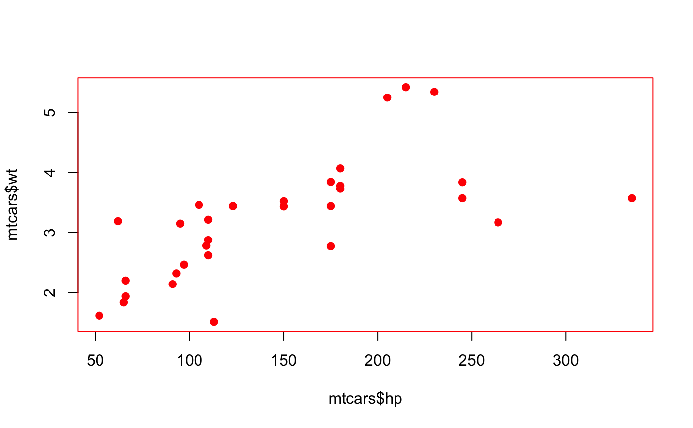

Whither withr?
Many functions in R modify global state in some fashion. Some common examples are par() for graphics parameters, setwd() to change the current directory and options() to set a global option. Using these functions is handy when using R interactively, because you can set them early in your experimentation and they will remain set for the duration of the session. However this makes programming with these settings difficult, because they make your function impure by modifying a global state. Therefore you should always strive to reset the previous state when the function exits.
One common idiom for dealing with this problem is to save the current state, make your change, then restore the previous state.
par("col" = "black") my_plot <- function(new) { old <- par(col = "red", pch = 19) plot(mtcars$hp, mtcars$wt) par(old) } my_plot()

par("col") #> [1] "black"
However this approach can fail if there’s an error before you are able to reset the options.
par("col" = "black") my_plot <- function(new) { old <- par(col = "red", pch = 19) plot(mtcars$hpp, mtcars$wt) par(old) } my_plot() #> Error in xy.coords(x, y, xlabel, ylabel, log): 'x' and 'y' lengths differ par("col") #> [1] "red"
Using the base function on.exit() is a robust solution to this problem. on.exit() will run the code when the function is exited, regardless of whether it exits normally or with an error.
par("col" = "black") my_plot <- function(new) { old <- par(col = "red", pch = 19) on.exit(par(old)) plot(mtcars$hpp, mtcars$wt) } my_plot() #> Error in xy.coords(x, y, xlabel, ylabel, log): 'x' and 'y' lengths differ par("col") #> [1] "black" options(test = 1) { print(getOption("test")) on.exit(options(test = 2)) } #> [1] 1 getOption("test") #> [1] 2
However this solution is somewhat cumbersome to work with. You need to remember to use an on.exit() call after each stateful call. In addition by default each on.exit() action will overwrite any previous on.exit() action in the same function unless you use the add = TRUE option. add = TRUE also adds additional code to the end of existing code, which means the code is not run in the Last-In, First-Out order you would generally prefer. It is also not possible to have this cleanup code performed before the function has finished.
withr is a solution to these issues. It defines a large set of functions for dealing with global settings in R, such as with_par(). These functions set one of the global settings for the duration of a block of code, then automatically reset it after the block is completed.
par("col" = "black") my_plot <- function(new) { with_par(list(col = "red", pch = 19), plot(mtcars$hp, mtcars$wt) ) par("col") } my_plot()

#> [1] "black"
par("col")
#> [1] "black"In addition to the with_* functions there are local_* variants whose effects last until the end of the function they are included in. These work similar to on.exit(), but you can set the options in one call rather than two.
par("col" = "black") my_plot <- function(new) { local_par(list(col = "red", pch = 19)) plot(mtcars$hp, mtcars$wt) } my_plot()

par("col") #> [1] "black"